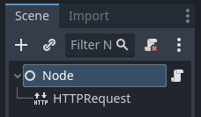

Gửi HTTP request
Tại sao dùng HTTP?
HTTP request hữu ích để giao tiếp với web server và các chương trình khác không phải Godot.
So với các tính năng mạng khác của Godot (như Multiplayer cấp cao), HTTP request có chi phí phụ trội lớn hơn và mất nhiều thời gian hơn để khởi động, nên chúng không phù hợp cho giao tiếp thời gian thực, và không tốt cho việc gửi nhiều cập nhật nhỏ như thường thấy trong gameplay nhiều người chơi.
Tuy nhiên, HTTP mang lại khả năng tương tác với các tài nguyên web bên ngoài và rất giỏi trong việc gửi và nhận lượng lớn dữ liệu, ví dụ để truyền các tệp như asset của game. Các asset này sau đó có thể được tải bằng tải và lưu tệp lúc chạy.
Vì vậy HTTP có thể hữu ích cho hệ thống đăng nhập, trình duyệt lobby của game, để lấy một số thông tin từ web hoặc để tải về asset của game.
HTTP request trong Godot
Node HTTPRequest là cách dễ nhất để gửi HTTP request trong Godot. Nó được xây dựng dựa trên HTTPClient cấp thấp hơn, có bài hướng dẫn tại đây.
Trong ví dụ này, chúng ta sẽ gửi một HTTP request đến GitHub để lấy tên của bản phát hành Godot mới nhất.
Cảnh báo
Khi xuất sang Android, hãy nhớ bật quyền Internet trong export preset Android trước khi xuất dự án hoặc dùng one-click deploy. Nếu không, mọi loại giao tiếp mạng sẽ bị hệ điều hành Android chặn.
Chuẩn bị scene
Tạo một scene trống mới, thêm một Node gốc và thêm script vào nó. Sau đó thêm một node HTTPRequest làm node con.

Viết script cho request
Khi dự án khởi động (tức là trong _ready()), chúng ta sẽ gửi một HTTP request đến Github bằng node HTTPRequest, và khi request hoàn tất, chúng ta sẽ phân tích dữ liệu JSON trả về, tìm trường name và in nó ra console.
extends Node
func _ready():
$HTTPRequest.request_completed.connect(_on_request_completed)
$HTTPRequest.request("https://api.github.com/repos/godotengine/godot/releases/latest")
func _on_request_completed(result, response_code, headers, body):
var json = JSON.parse_string(body.get_string_from_utf8())
print(json["name"])
using Godot;
using System.Text;
public partial class MyNode : Node
{
public override void _Ready()
{
HttpRequest httpRequest = GetNode<HttpRequest>("HTTPRequest");
httpRequest.RequestCompleted += OnRequestCompleted;
httpRequest.Request("https://api.github.com/repos/godotengine/godot/releases/latest");
}
private void OnRequestCompleted(long result, long responseCode, string[] headers, byte[] body)
{
Godot.Collections.Dictionary json = Json.ParseString(Encoding.UTF8.GetString(body)).AsGodotDictionary();
GD.Print(json["name"]);
}
}
Lưu script và scene, rồi chạy dự án. Tên của bản phát hành Godot mới nhất trên Github sẽ được in ra output log. Để biết thêm về việc phân tích JSON, xem tài liệu tham khảo lớp JSON.
Lưu ý rằng bạn có thể muốn kiểm tra xem result có bằng RESULT_SUCCESS hay không và có lỗi phân tích JSON xảy ra hay không, xem tài liệu tham khảo lớp JSON và HTTPRequest để biết thêm.
Bạn phải chờ một request hoàn tất trước khi gửi request khác. Muốn gửi nhiều request cùng lúc, bạn cần một node cho mỗi request. Một chiến lược phổ biến là tạo và xóa các node HTTPRequest lúc chạy khi cần.
Gửi dữ liệu lên server
Cho đến giờ, chúng ta chỉ mới yêu cầu dữ liệu từ server. Nhưng nếu bạn cần gửi dữ liệu lên server thì sao? Đây là một cách phổ biến để làm điều đó:
var json = JSON.stringify(data_to_send)
var headers = ["Content-Type: application/json"]
$HTTPRequest.request(url, headers, HTTPClient.METHOD_POST, json)
string json = Json.Stringify(dataToSend);
string[] headers = ["Content-Type: application/json"];
HttpRequest httpRequest = GetNode<HttpRequest>("HTTPRequest");
httpRequest.Request(url, headers, HttpClient.Method.Post, json);
Đặt HTTP header tùy chỉnh
Tất nhiên, bạn cũng có thể đặt HTTP header tùy chỉnh. Chúng được truyền dưới dạng một mảng chuỗi, mỗi chuỗi chứa một header theo định dạng "header: value". Ví dụ, để đặt user agent tùy chỉnh (header HTTP User-Agent) bạn có thể dùng như sau:
$HTTPRequest.request("https://api.github.com/repos/godotengine/godot/releases/latest", ["User-Agent: YourCustomUserAgent"])
HttpRequest httpRequest = GetNode<HttpRequest>("HTTPRequest");
httpRequest.Request("https://api.github.com/repos/godotengine/godot/releases/latest", ["User-Agent: YourCustomUserAgent"]);
Nguy hiểm
Hãy lưu ý rằng ai đó có thể phân tích và dịch ngược ứng dụng bạn đã phát hành, từ đó có thể truy cập vào mọi thông tin xác thực được nhúng như token, tên người dùng hay mật khẩu. Điều đó có nghĩa là nhúng những thứ như thông tin đăng nhập cơ sở dữ liệu vào game thường không phải là ý hay. Hãy tránh cung cấp thông tin hữu ích cho kẻ tấn công bất cứ khi nào có thể.